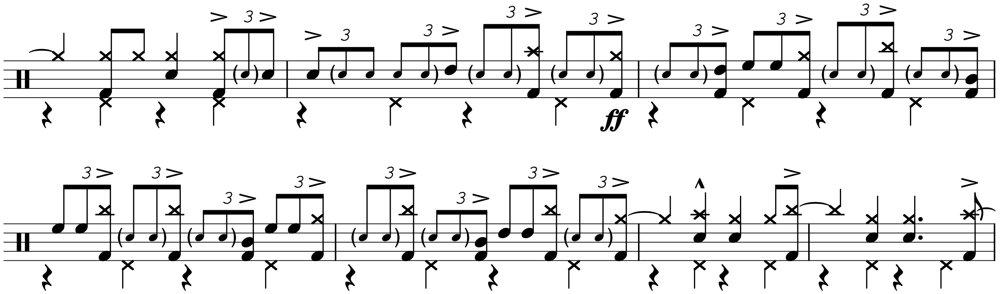
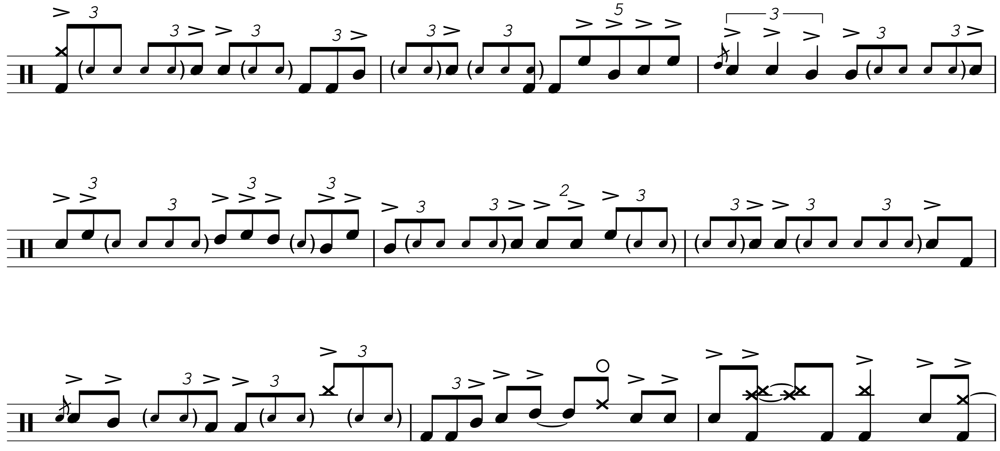

Transcription: “Ya Gotta Try” — Vinnie Colaiuta with The Buddy Rich Big Band

It’s time for Buddy Rich part 3: today, we’re jumping back to the second half of the concert with Vinnie Colaiuta on the tune “Ya Gotta Try”. “Ya Gotta Try” was one of Buddy’s favorites, and it was one of the more exhilarating charts played that night (along with “Time Check”).
Most of the drummers from this gig played their numbers at Buddy’s tempo, or a smidge faster. Vinnie, however, dials this one back by about 20 clicks:
Funny thing, it’s still much faster than composer Sammy Nestico intended. I found a short video were Sammy talks about how Buddy learned "Ya Gotta Try" and how he kept making his band play the chart faster and faster. Compare Buddy’s version to Count Basie’s — the latter feels like it’s moving in slow motion.
There seems to be a small debate over who played it better; I do enjoy the excitement of Buddy’s version, and even Sammy seems to think Buddy’s is the definitive interpretation (as do the Blue Devils). FWIW, there’s no metronome marking on the original sheet music, so there’s no “correct” tempo.
Anyway, Vinnie actually starts the song with an open drum solo. Not every drummer got a chart that has an extended drum solo written in, so Vinnie just plays around before cueing the rest of the band to start the tune.
I didn’t know how much of his solo I should transcribe — I kind of got myself into a bit of a spot since I did all of Steve Gadd’s solo and a good chunk of Gregg Bisonette’s. I ended up doing none of it. Yeah, I hate to skimp out, but I really struggle with drum solos that aren’t built around a strong groove, both in terms of transcribing and enjoyment. I’ll probably talk more about that once I’ve wrapped these posts up, but for now, we’ll just move on.
Alright alright, if you must know, there are some licks that really stand out to me in the intro solo. It's mostly when Vinnie shows off one of his signature moves, variously described as a "linear roll"... well, I guess most drum rolls are linear. It’s really just notes alternating between one hand and the kick:

Maybe we'll call it a "split roll". He also throws in both hands to spice things up (played L K R K):

I believe Vinnie was the only drummer from the second half to have any sort of double bass setup, but you can tell he wasn’t as fluent with it as someone like Gregg. Vinnie pretty much saves it for short ruffs, as well as the big trashcan ending.
For the actual transcription, I start with the section right before the tenor sax solos. This moment is actually from a different Nestico tune, “Ya Gotta Try… Harder”. Both Buddy and Basie include this interlude in their versions of “Ya Gotta Try”, so I’m guessing Sammy told them to do it. Maybe it’s just a gimmick to get band leaders out there to buy two charts so they can play one tune.
During the big ensemble hits at 2:50, Vinnie plays a very demanding lick built around puh-duh-duhs (RLL):
There are actually puh-duh-duhs all over the tune. Vinnie has some wicked chops, but he does such a good job of orchestrating stuff around his kit.
Next up is the unison section. Vinnie is quite skillful at filling out the rhythms that the band plays, throwing in a lot of fancy subtleties and orchestrations. I've noticed that Vinnie seems to be a fan of ghosting kick drum notes. Many of these ghost notes are barely audible; if it weren't for the video I wouldn't have caught them. Also, Vinnie can't seem to get his hi hat pedal under control — I did my best to write it all down. Most of the time, I see his left leg stomping on 2 and 4, but anytime he steps on or off the pedal, the hats bounce around quite a bit. It must be how Vinnie tensioned his hats. Whatever.
I included the big shout chorus, which features an 8 an bar drum solo:
Check it out, a quintuplet in the wild! It’s always cool to see one. Since I didn’t do a drum solo from Vinnie, I finished out the tune. Vinnie closes the number by catching the finale ensemble figures with some ferocious fills around the kit:

The sheet music doesn’t really do it justice, you’ll have to give it a listen.
FYI, you should spot some duplet rhythms in the sheet music. Those notes are supposed to be played straight. 130 is around the upper limit for swing rhythms to actually sound swung, and Vinnie does differentiate. I got the idea from a transcription of the famous “Take Five” drum solo that’s been floating around the internet for a few years. I doubt it’s standard engraving protocol — most arrangers would just write in “Straight 8th’s” with a line over the notes in question. In fact, I found a forum post explicitly advising not to use duplets to accomplish this… but it’s very convenient for when you only need to highlight a few notes. Funny enough, during playback, MuseScore will actually play the duplets as straight 8ths. I guess you should use this at your own risk; when I saw the the “Take Five” sheet music, I couldn’t figure out what the duplets meant until I listened along to the recording. But hey, this gives people a reason to actually read my blog!
Posted on October 25, 2020
Tags: 2020 • Transcription • Vinnie Colaiuta • The Buddy Rich Big Band • 1989 Buddy Rich Memorial Concert